Upgrading my Acoustic Zen Adagio (July 2006)
Dear audiophile friends,
I would like you to know that Rober Lee, patron of Acoustic Zen, is a great person. I told him about some “midrange” imperfections of my Adagio model and he sent me a new tweeter together with a completely new xover. I had to upgrade my sample with the new components and in the following pictures you can see how to do it, if you will need yourself.
|
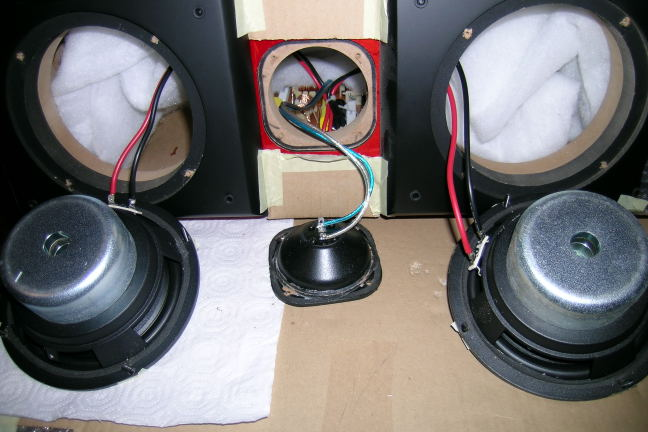 Opening the two 6.5” ceramic woofers and the old ribbon tweeter. |
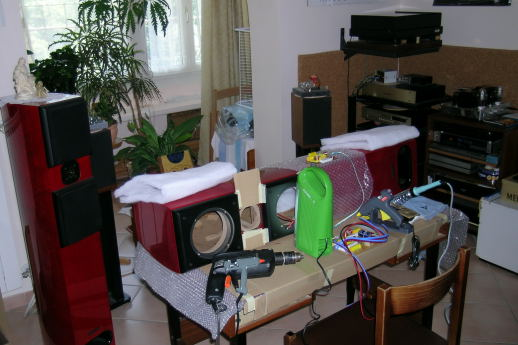 How to transform your living room in a true hi-end lab and make your wife REALLY happy!. |
First you need to remove the drivers and a simple 3mm Allen key will do the job. Using a good station, unsolder the drivers. Then, remove the 3 white fill pieces from behind the drivers. Now it came the difficult task, which is to remove the two old crossovers. The problem are not the screws but the strong glue. I have used a chisel. Finally you can fix inside (using thermal glue and screws) the new xover and solder the drivers (with the new tweeter) to its output wires. Since the new xover has separate high and low inputs (bypassed by a wire jumper) I have used a couple of input cables running from the -single- binding posts to these inputs and have removed the jumper, making my Adagio “bi-wiring ready” up to the binding posts.
|
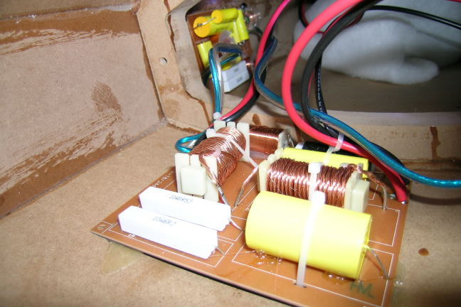 The old crossover: nearest is the low-pass and behind the high-pass. |
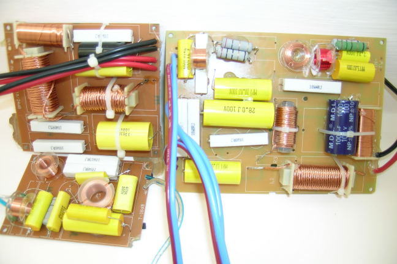 The old 2-way crossover (left) compared with the new one (right): they are quite different! |
|
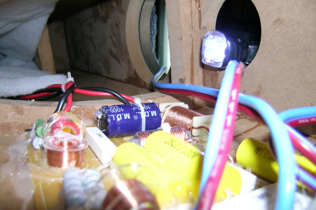 The new xover mounted on the Adagio left side, note the “bi-wiring” input AZ cables (red-black). |
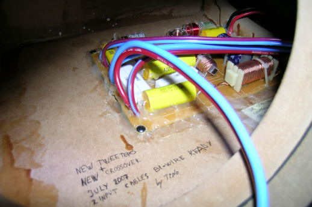 The new xover and the “signature” of the upgrade made. |
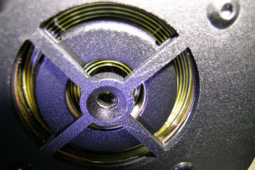
Master Lee told me that the new tweeter is quite different from the old one and so must be used only with the new xover, which probably has some notch cells tuned for this different component. The new xover is still a third order Linkwitz-Riley, but the components are quite different, especially on the high-pass filter.My first impression listening the new version is that the tweeter is much more “controlled” than before, and if the old Adagio sometimes sounded a little “brilliant”, the new one never gives this feeling. That, despite the fact that also the new Adagio has the same, very high, resolution and extension trough the high part of the spectrum. Interestingly enough, also the low part of the spectrum seems to me quite improved, with tighter bass response. Finally, I feel a better “body” on the midrange range, in particular on the mid-high transition. The soundstage is still very large and transparent, with each instrument well focused.
From the set of measurements that I have performed you can see a more linear trend on the mid-high part of the spectrum. In fact, the only strange feature I was able to find is a sort of hole at 500 Hz, which I have related to some internal resonant response of the box or of the port. A better diagram should be constructed adding the near field port response in the low part, so may be that the hole could be partially covered in that way.
|
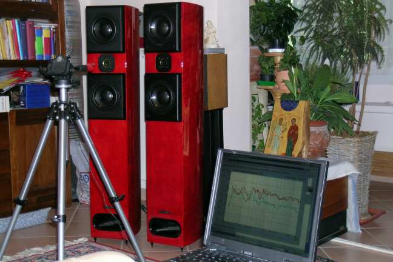 Measuring the new Adagio in room response. |
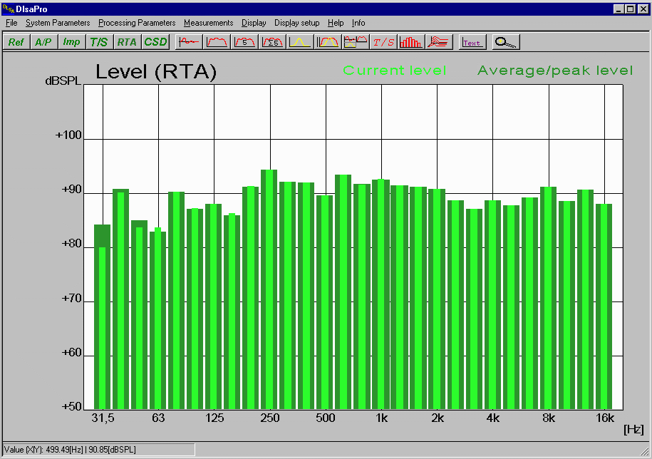 RTA analyser at 1 m in front of the new tweeter: it is visible a small gap at 500 Hz g and a gentle valley around 3 kHz. |
|---|---|
|
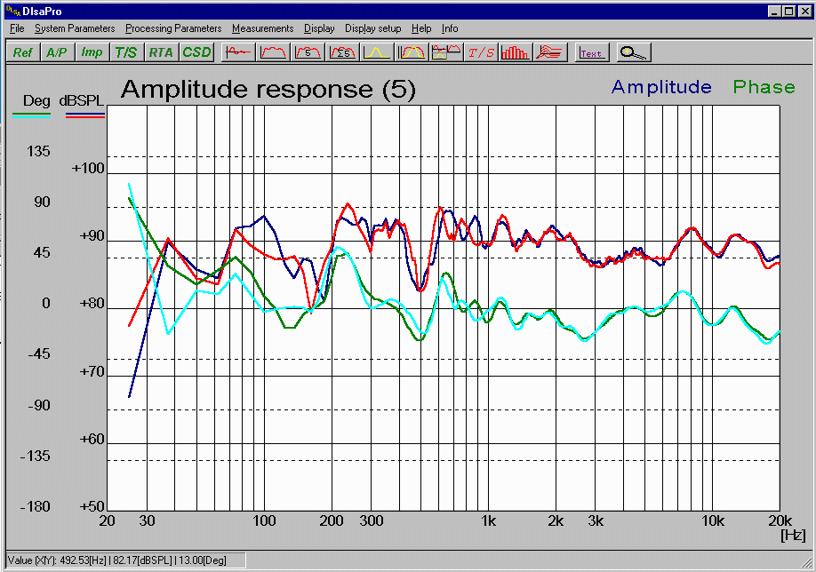 Left (blue, cyan) and right (red, green) sp. frequency responses at 1m. 1/3 octave mean. No near field contribution from the port is added at the low end. At 500 Hz there is a gap but above the response is very flat, like is the acoustical phase (cyan and green lines). |
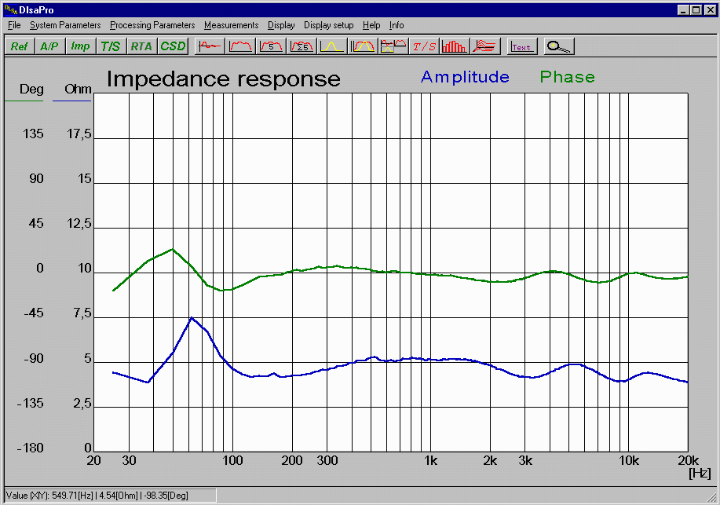 The left sp. Impedance and phase response: the complex cross-over resulted in a really flat impedance (around 5 Ohm) and phase. Note the slight wave at 500 Hz. |
What to say more? My new Adagio (let's say “Adagio ma non troppo”) are even better than before and the upgrade was worth of all the work that I and my wife (which helped a lot when soldering these thick wires) had to do. Many thanks again to Robert Lee!
Tino © August 2007